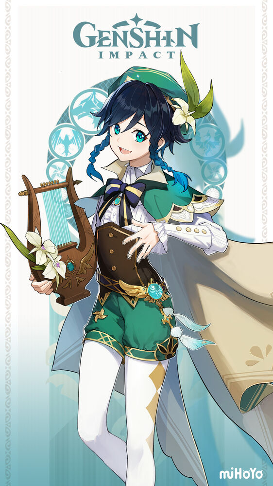
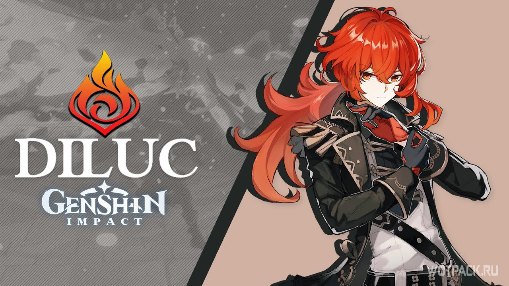

Содержание
История

Genshin Impact была анонсирована в июне 2019 года, и её выход был намечен на 2020 на платформы Windows и iOS. Первый трейлер продемонстрировал открытый мир, сильно вдохновлённый игрой The Legend of Zelda: Breath of the Wild в плане атмосферы, внешнего вида и геймплея, значительную часть которого составляет исследование массивного открытого мира, выполнение испытаний и решение головоломок. В конце июня был запущен бета-тест.
На презентации Sony ChinaJoy 2019 был анонсирован выпуск игры на PlayStation 4[5]. Версию для Nintendo Switch анонсировали позже, 13 января 2020.
6 августа miHoYo официально подтвердили выход игры осенью 2020.
Разработка
 miHoYo анонсировали разработку над новым проектом на движке Unity в конце января 2017, спустя 3 месяца после выхода игры Honkai Impact. Компания заявила, что они намереваются сделать проект гораздо бо́льшего масштаба, чем предыдущие. Проектом, о котором шла речь, был Genshin Impact.
miHoYo анонсировали разработку над новым проектом на движке Unity в конце января 2017, спустя 3 месяца после выхода игры Honkai Impact. Компания заявила, что они намереваются сделать проект гораздо бо́льшего масштаба, чем предыдущие. Проектом, о котором шла речь, был Genshin Impact.
Сюжет

В начале игры игроку представляется кат-сцена, в которой показывается битва двух главных героев игры (Люмин и Итэр) с неким божеством. После видео игрок может выбрать персонажа, от лица которого он будет проходить игру.
После вступительного ролика игрок впервые знакомится с миром Тейват. Игровые события начинаются через два месяца после пробуждения главного героя, когда он (или она) встречаются с Паймон, которая соглашается стать компаньоном на всё путешествие. Цель путешествия - поиск сестры или брата (в зависимости от выбора игрока) главного героя. Для этого игроку нужно путешествовать по Тейвату, и главный герой ставит задачу встретиться со всеми Архонтами.